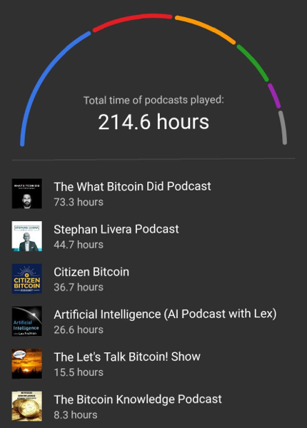

(Press ? for help, n and p for next and previous slide)
Зачем?
Я хочу жить в мире где люди имеют контроль над тем и ответственность за то, что они ценят
Как?
Обучая людей тому, как владеть и работать с биткоином безопасно и конфиденциально
Что?
Клуб
Я хочу ораганизовать клуб
Я изучал биткоин в течении последних 2.5 лет
Моя статистика прослушивания подкаство про биткоин

Встречи каждые две недели